How to set up and run the market on your server. Everything is done in game, on the Admin and Owner pages of the market window.
The cluster chapter (several maps sharing one market) will be added here soon. Everything below also applies to a single server.
First setup
The mod needs an owner before players can use it. Until then the market window shows NOT SET UP YET.
- Log in as ARK admin on the server (
enablecheats). - Open the market from your radial wheel.
- Press Generate code. Your owner code is shown only to you.
- Type the code into the box and press Take ownership.
The first admin who enters a code becomes the owner. In single player and on a non-dedicated server the host is the owner automatically.

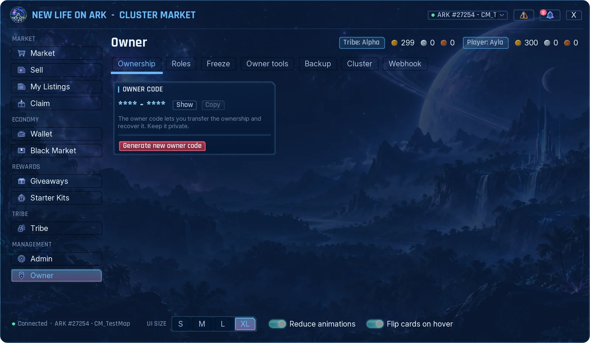
Keep the owner code private. You need it to hand over the ownership, to recover it, and for the dangerous actions on the Owner page. Generate new owner code makes a new one; the old code keeps working until you activate the new one.
Roles and admin permissions

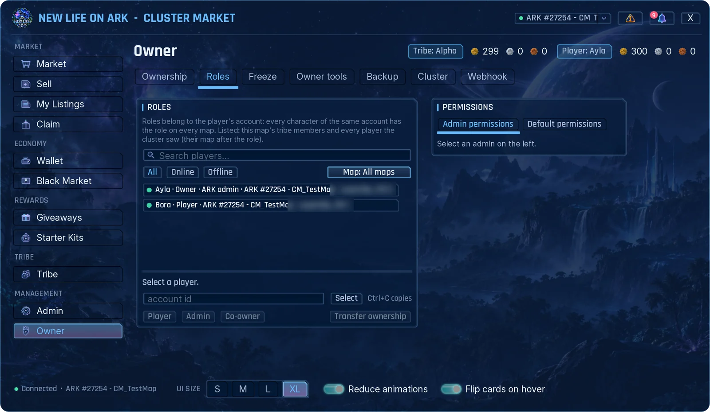
| Role | Can do |
|---|---|
| Owner | Everything, including the Owner page. |
| Co-owner | Everything the owner can, except seeing the owner code, handing over the ownership and naming co-owners. |
| Admin | Only the Admin tabs you allow. |
- Open Owner → Roles.
- Find the player with the search box or the Online / Offline and map filters, and click the row.
- Press Player, Admin or Co-owner.
- For an admin, tick the tabs they may use in the Permissions card and save.
- Being an ARK admin does not make someone a market admin. You add them here.
- Every permission is one Admin tab. A new admin gets a copy of Default permissions; all of them are off until you turn them on.
- An admin does not see the tabs they have no permission for.
- Roles belong to the player's account, so they apply to every character of that player.
- Transfer ownership hands the market to an online ARK admin. They confirm with the owner code.
By default, owners and admins see the Admin and Owner pages only while they are logged in as ARK admin. You can turn this off with Require ARK admin login in Admin → General.
General settings

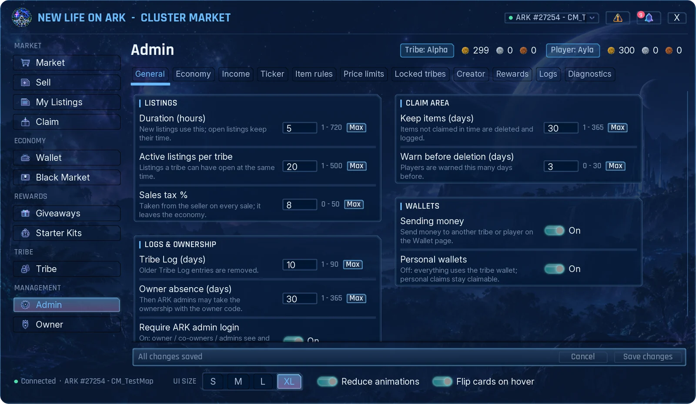
| Setting | What it does | Default |
|---|---|---|
| Duration (hours) | How long a new listing stays open. Open listings keep their time. | 72 |
| Active listings per tribe | How many listings a tribe can have open at once. | 20 |
| Sales tax % | Taken from the seller on every sale. It leaves the economy. | 5 |
| Keep items (days) | How long items wait in Claim before they are deleted. | 30 |
| Warn before deletion (days) | Players are warned this many days before. | 3 |
| Sending money | Lets players send currency to another tribe or player. | On |
| Personal wallets | Off: everything uses the tribe wallet. | On |
| Tribe Log (days) | Older Tribe Log entries are removed. | 10 |
| Owner absence (days) | After this time without the owner, ARK admins may take the ownership with the owner code. | 30 |
| Require ARK admin login | Owners and admins use the Admin and Owner pages only while logged in as ARK admin. | On |
Settings apply as soon as you save. Players do not need to reopen the window.
Economy

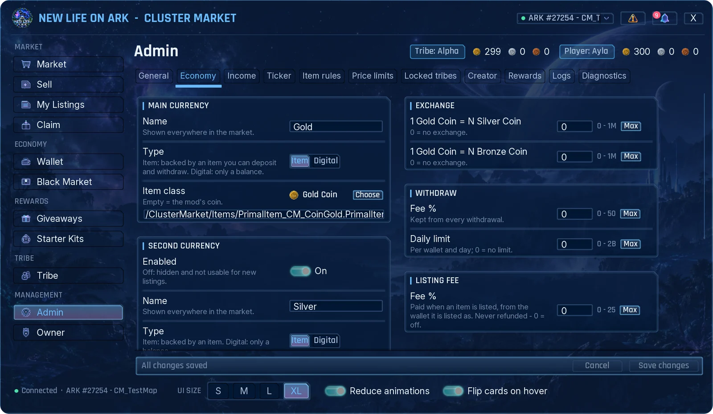
Currencies
There is one main currency and up to two more. For each one you set:
- Name: shown everywhere in the market.
- Type: Item means players can deposit and withdraw an item. Digital means it is only a balance.
- Item class: the item behind the currency. Leave it empty to use the mod's own Gold, Silver and Bronze coins, or press Choose to pick any item.
- Enabled (second and third currency): off hides the currency and it cannot be used for new listings.
Currency items cannot be listed for sale.
Exchange, withdraw and listing fee
- Exchange: how many coins of the second and third currency one main coin is worth. 0 means no exchange.
- Withdraw fee % and daily limit: kept from every withdrawal, and how much a wallet may withdraw per day. 0 means no limit.
- Listing fee %: paid when an item is listed, from the wallet it is listed as. It is never refunded. 0 turns it off.
Online income

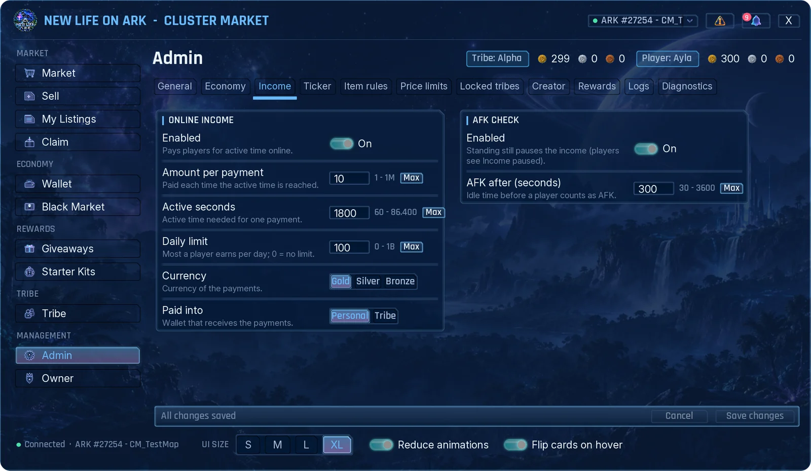
Pays players for the time they actively play.
- Amount per payment, Active seconds needed for one payment, and a Daily limit per player (0 means no limit).
- Currency and Paid into: the personal wallet or the tribe wallet.
- AFK check: standing still pauses the income after the time you set. Players see an "Income paused" notice until they move.
Ticker

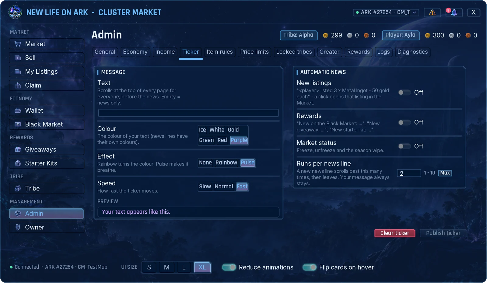
The ticker is the line that scrolls at the top of every page.
- Write your message, pick a colour, an effect and a speed. The preview shows the result.
- Automatic news adds lines for new listings, new rewards and market status changes. Players can click a news line to open that listing or page.
- Publish ticker shows it to everyone. Clear ticker removes it.
Item rules and price limits

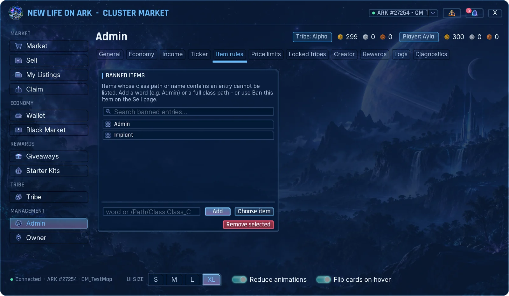
Banned items
An item cannot be listed if its name or class path contains one of the entries. Add a word (for example Admin), a full class path, or press Choose item. On the Sell page, admins also see a Ban this item button.

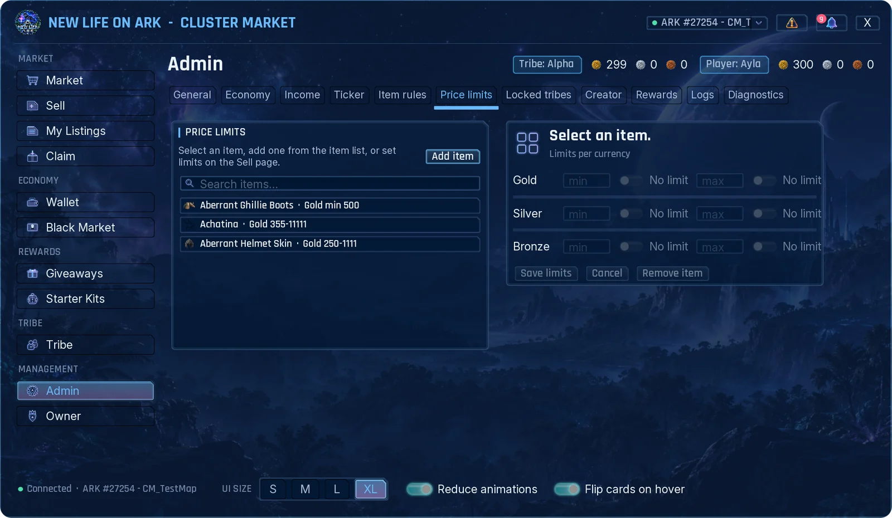
Price limits
- Press Add item and pick the item, or select it in the list.
- Type the lowest and highest price for each currency, or leave No limit on.
- Press Save limits.
Setting the same lowest and highest price gives a fixed price. For cryopods the limit is set per creature species.
Locked tribes

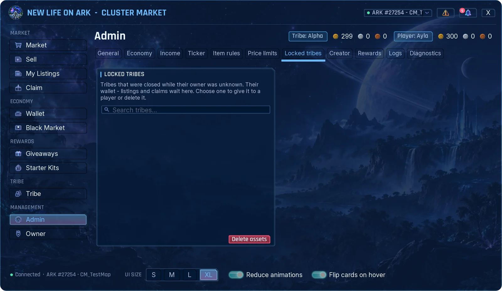
When a tribe is disbanded, its wallet, listings and waiting items normally go to its last owner. If the market does not know who that was, the tribe's assets wait here. Choose the tribe, then give everything to a player or delete it.
Creator

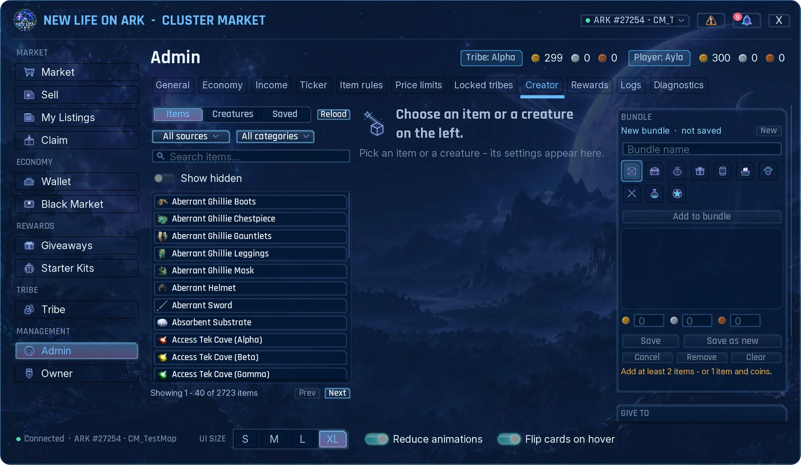
The Creator makes exact items and creatures and gives them away. Every gift is written to the admin log, and admins are told when the player claims it.
- Items: quantity, quality tier or an exact quality number, blueprint, custom name and stat overrides. Items from other mods are in the list too; Reload rescans them.
- Creatures: level, exact stat points, gender, colours, traits, imprint and saddle. Delivered in a cryopod, or as a fertilized egg for species that lay eggs.
- Bundle: several items, with coins if you like, saved under one name and icon.
- Saved: your saved definitions and bundles. Rewards use them too.
Give
- Pick who gets it: Me, Player, Tribe or Everyone.
- Set Times and, if you want, coins.
- Press Give.
Gifts to other players arrive in their Claim. Me puts the item straight into your inventory.
A player appears in the list only after they have opened the market once on this server. If someone is missing, ask them to open it, then leave the Creator tab and come back.
Admins with the Creator permission also see a CLONE button in item details. It puts an exact copy of that item into your inventory; the listing is not changed.
Rewards

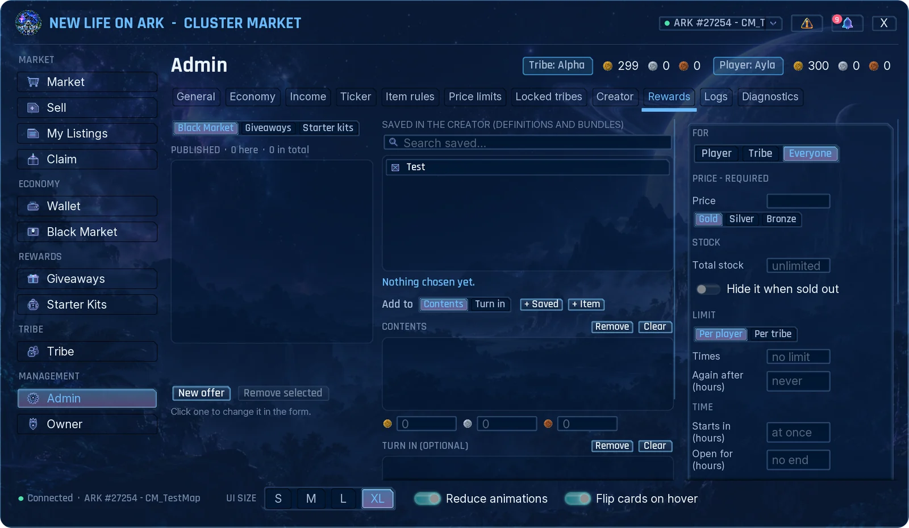
Pick Black Market, Giveaways or Starter kits at the top left, fill in the offer and publish it. Players find it on the page with the same name, and what they take goes to their Claim.
- Contents: add a saved definition or bundle (+ Saved), single items (+ Item) and coins.
- Turn in (giveaways): items the player must hand in. They can bring them in parts; handed-in items are deleted.
- For: one player, one tribe, or everyone.
- Price: required for the Black Market, optional for giveaways.
- Stock: unlimited or a number, with Hide it when sold out.
- Limit: how many times per player or per tribe, and Again after a number of hours.
- Time: start later and stay open for a number of hours.
- Level range, and Only new players, counted from the player's first visit to the market.
- Tell everyone online: sends a message when you publish.

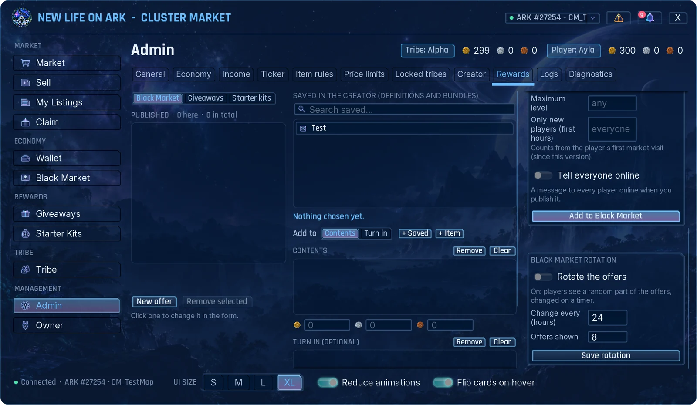
Black Market rotation shows players only a random part of your offers and changes it on a timer. Set how often it changes and how many offers are shown.
To change a published offer, click it in the list; it loads into the form. Offers that players cannot see right now are marked for you with the reason.
Logs

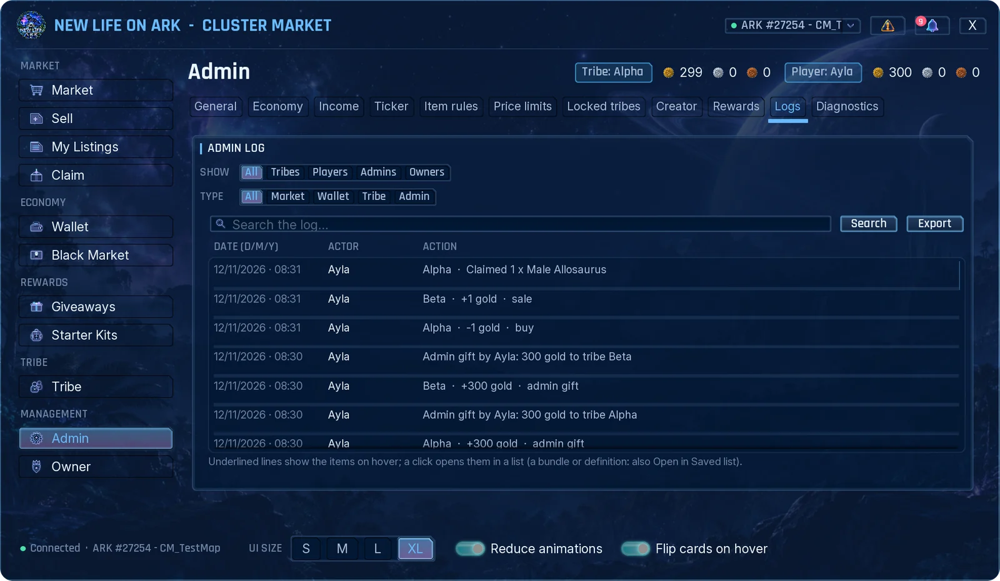
The admin log keeps every sale, purchase, wallet movement, gift and admin action.
- Show filters by who (tribes, players, admins, owners) and Type by what (market, wallet, tribe, admin). The search box looks in all columns.
- Underlined item names show their details on hover. Click the line to see the full item list.
- Export writes what you see to a file on your computer and shows the path.
Freeze

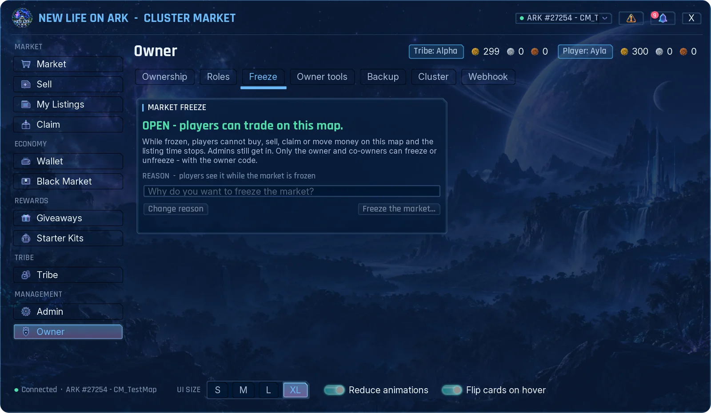
Freezing pauses all trading. Players cannot buy, sell or move money, and listing time stops. They can still open the market and take their items from Claim. Admins can still trade.
- Open Owner → Freeze.
- Write the reason. Players see it at the top of every page.
- Press Freeze the market and confirm with your owner code.
Only the owner and co-owners can freeze or unfreeze.
Admin log cleanup and season wipe

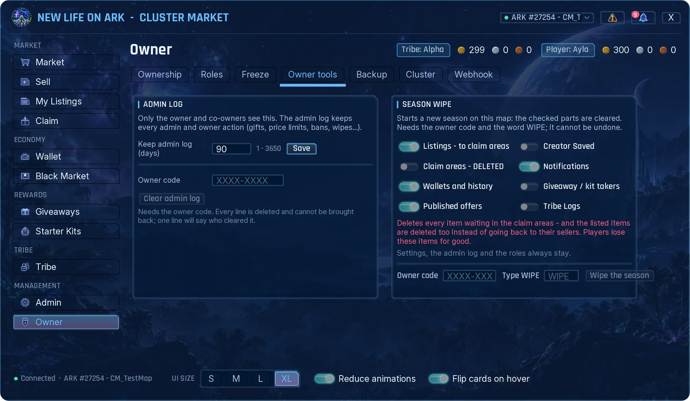
Admin log
Set how many days the admin log is kept. Clear admin log needs the owner code and cannot be undone; one line stays to say who cleared it.
Season wipe
Starts a new season. Tick the parts you want to reset:
- Listings: go back to their sellers' Claim.
- Claim areas: deletes every waiting item. If you tick this, listed items are deleted too instead of going back.
- Wallets and history, Published offers, Creator Saved, Notifications, Giveaway / kit takers, Tribe Logs.
Type your owner code and the word WIPE, then press Wipe the season. A backup is made first. Settings, the admin log and roles always stay, and players' ARK inventories are not touched.
Backup and restore

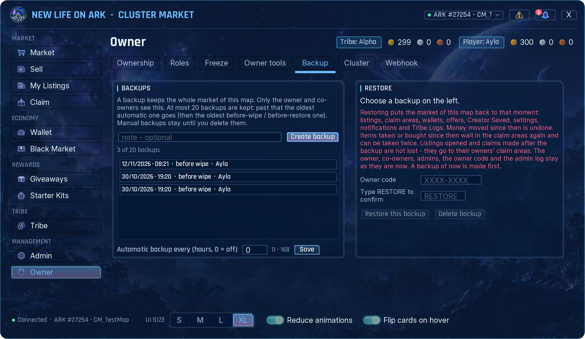
- Create backup saves the whole market. You can add a note.
- Automatic backup every (hours) makes one on a timer. 0 turns it off.
- Up to 20 backups are kept. When the list is full the oldest automatic one goes first. Manual backups stay until you delete them.
- A backup is also made before every season wipe and every restore.
Restore
- Select the backup in the list.
- Type your owner code and the word
RESTORE. - Press Restore this backup.
Listings, Claim areas, wallets, offers, Creator Saved, settings, notifications and Tribe Logs go back to that moment. The owner, roles, codes and the admin log stay as they are now. Listings opened and items claimed after the backup are not lost; they go to their owners' Claim.
Discord webhooks

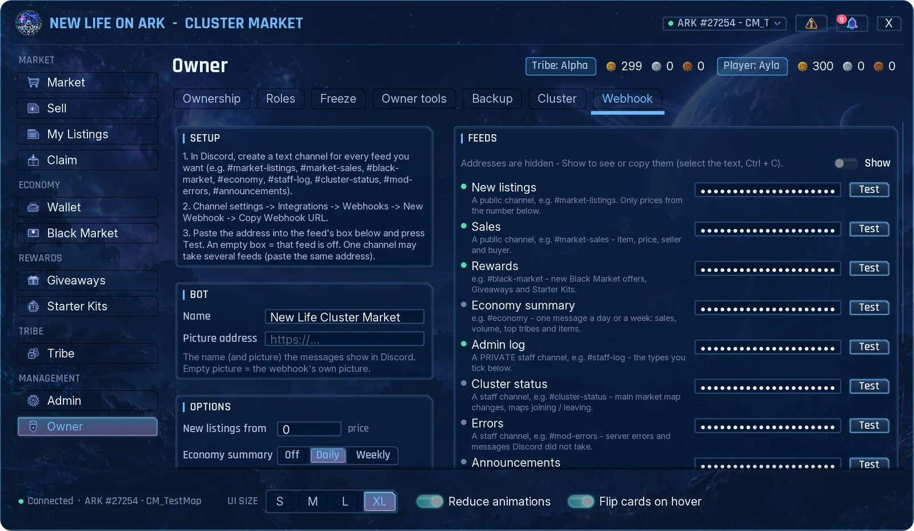
The market can post to your Discord server. Each feed has its own box, so each one can go to its own channel.
- In Discord, create a text channel for every feed you want.
- Open the channel settings: Integrations → Webhooks → New Webhook → Copy Webhook URL.
- In the market, open Owner → Webhook, paste the address into the feed's box and press Test.
- Press Save.
| Feed | Posts |
|---|---|
| New listings | Every new listing. You can set a price from which listings are posted. |
| Sales | Item, price, seller and buyer. |
| Rewards | New Black Market offers, Giveaways and Starter Kits. |
| Economy summary | One message a day or a week: sales, volume, top tribes and items. |
| Admin log | The admin actions you tick under Admin log types. Use a private staff channel. |
| Errors | Server errors and messages Discord did not take. Use a private staff channel. |
| Announcements | The message you publish in Admin → Ticker. |
An empty box turns that feed off. The same address can be used for several feeds. Addresses are hidden on the page until you press Show, and only the owner and co-owners see this tab.
Diagnostics and support

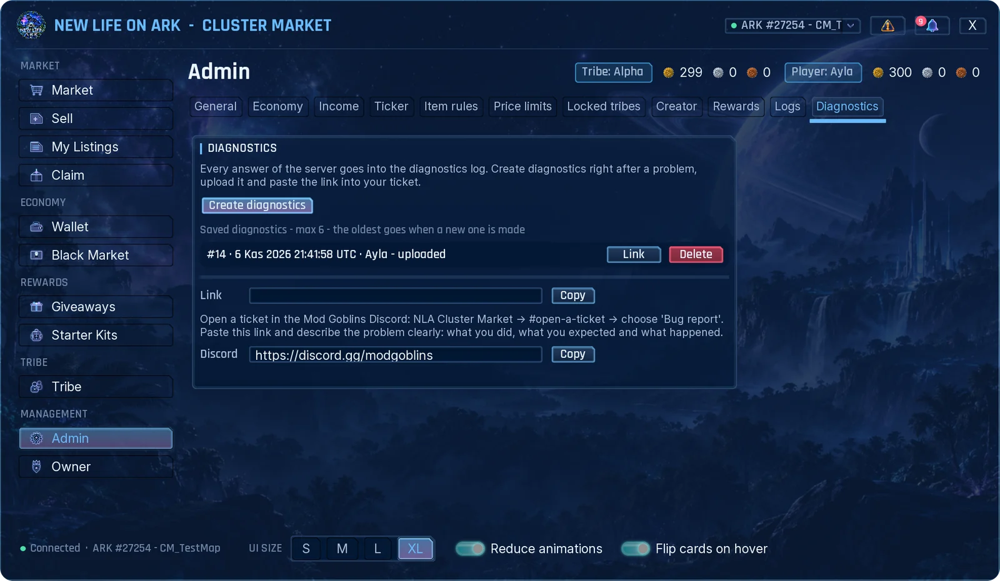
When something goes wrong, send us a diagnostics file. It holds the recent market events and errors of your server. It does not contain your owner code or webhook addresses.
- Right after the problem, open Admin → Diagnostics and press Create diagnostics.
- Press Upload on the new line and confirm.
- Press Link, then Copy.
- Open a ticket in the Cluster Market area of the Mod Goblins Discord, paste the link and describe what you did, what you expected and what happened.
The six newest files are kept. Admins need the Diagnostics permission to see this tab.